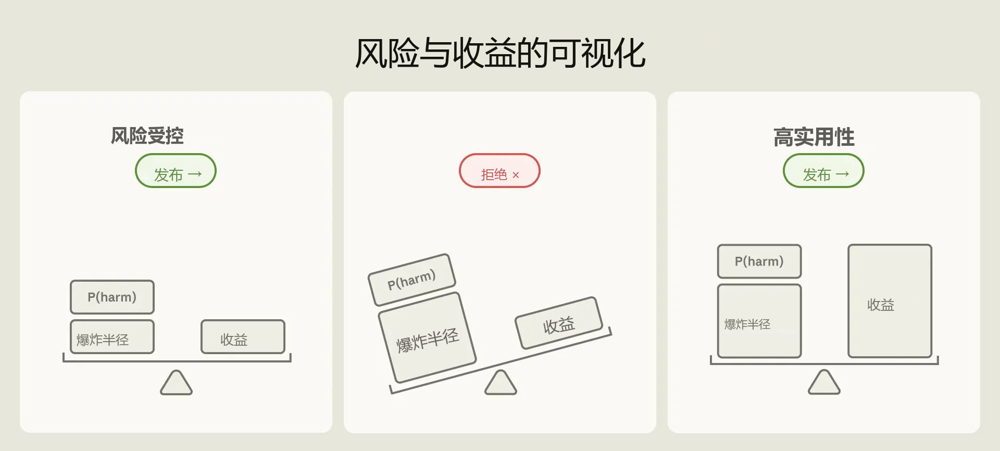
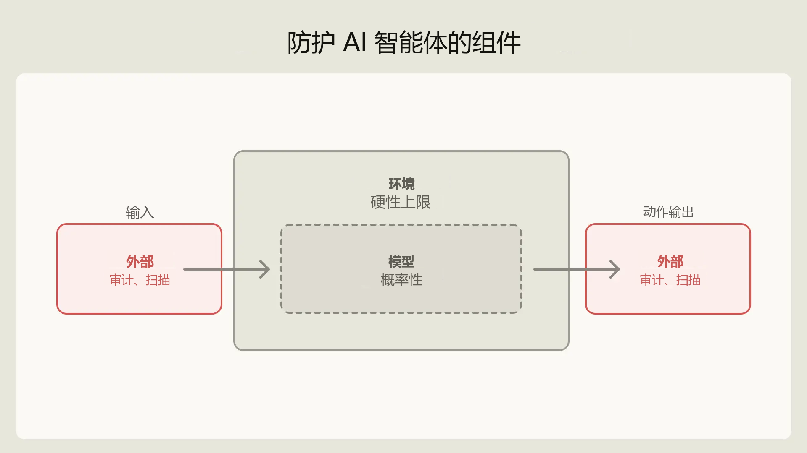
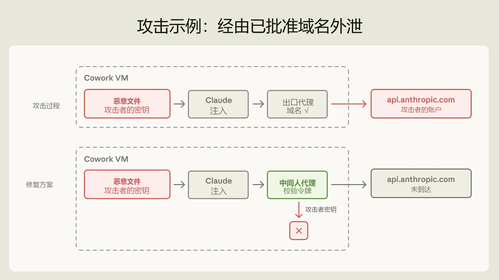
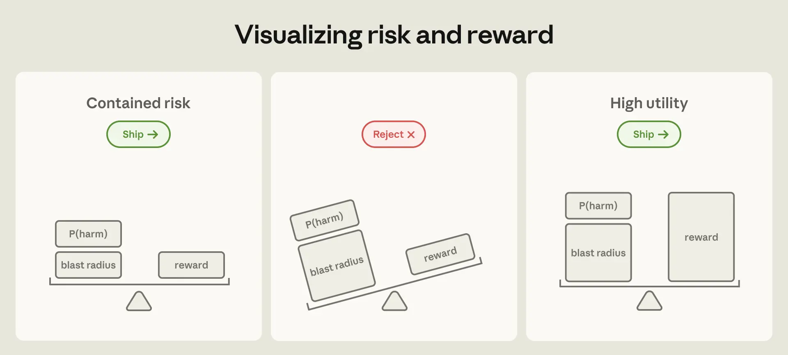
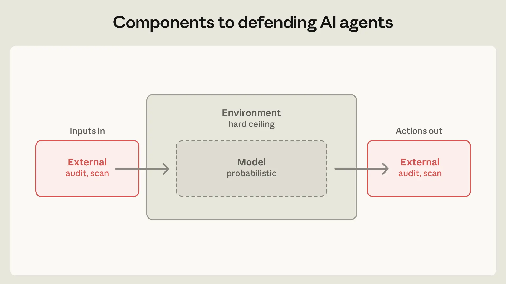
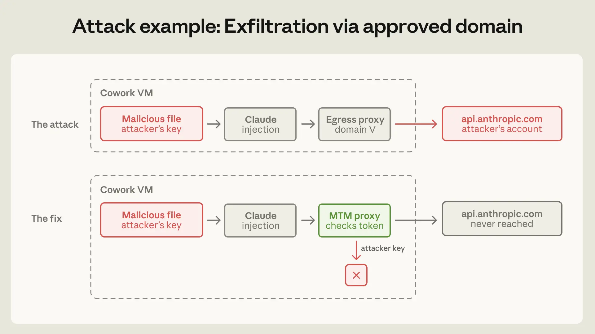

我们如何在各产品中约束Claude
📖 中文摘要
专业术语注解
爆炸半径（blast radius）：智能体一旦失控可能造成的最大损害范围隔离（containment）：用沙箱、虚拟机与出口管控强制划定智能体可触及边界的做法出口管控（egress controls）：限制智能体能向哪些外部地址发送数据、防止数据外泄的机制人在回路（human-in-the-loop）：由用户逐条审批智能体操作的监督方式提示注入（prompt injection）：把恶意指令藏在工具输出或文件里劫持智能体行为的攻击📄 中文全文
- 类别： 工程（Engineering）
- 来源： https://www.anthropic.com/research/how-we-contain-claude
工程（Engineering） 2026 年 5 月 25 日 已发布 2026 年 5 月 25 日 团队 工程 主题
相关文章 * 前沿红队 2026 年 4 月 9 日 实践中的可信智能体
查看更多 十二个月前，若有人提出给Claude足以瘫痪Anthropic内部某项服务的访问权限，我们会不假思索地否决。如今，这种级别的访问已是常态，Anthropic的开发者也因此更高效。这类部署的风险由两部分构成：失效发生的可能性，以及一旦发生能造成多大破坏。防护措施与模型训练的进展稳步压低了前者；后者——理论上的爆炸半径（blast radius）——却只会随能力与访问范围的扩大而增长。然而，随着智能体能够承担过去需要一个人、甚至一个团队才能完成的工作，_不_部署的代价变得足够大，以至于只要产品能做到安全，风险收益的权衡就会明显倒向采用。工程上的问题于是变成：如何给爆炸半径设一道上限。

当自主智能体可能造成的相对损害能够被划定边界时——例如通过控制其运行环境——高实用性的能力就有了部署的理由。Claude Mythos Preview便是一例：2026年4月，我们认为它的爆炸半径过大，不宜发布。不过我们预计，随着防守方加固关键系统、防护措施趋于成熟，能力相近的模型会更适合广泛发布——尽管风险永远无法归零。模型能力是决定智能体部署总风险的一个重要因素。 大体上有两种做法。 第一种是通过人在回路（human-in-the-loop）监督智能体的行为。Claude Code过去会在每一轮向用户请求许可，以防智能体采取意料之外的动作。理论上这行得通，但我们发现这种做法并不可靠。我们的遥测数据显示，用户大约批准了93%的许可提示。用户看到的审批越多，对每一条的注意力就越少，久而久之监督便远不如起初审慎。我们近期构建了Claude Code自动模式，用自动完成更安全的审批来缓解这种审批疲劳。不过漏洞依然存在——任何概率性防御都有非零的漏判率。1 给爆炸半径设上限的第二种做法——也是本文大半篇幅的重点——是隔离（containment）。我们不去监督智能体做了什么，而是通过沙箱、虚拟机、出口管控（egress controls）等手段强制划定访问边界，来监督它有_能力_做什么。这正是Anthropic工程投入最多的地方，也是许多最出人意料的安全失效发生之处。 过去两年里，我们交付了三款主要的智能体产品：claude.ai、Claude Code与Claude Cowork。每一款面向不同的用户，因而需要不同的隔离架构。本文分享哪些设计经受住了考验、哪些出了问题，以及我们一路走来在智能体安全上学到的东西。三类风险，三层防御
智能体面临的安全风险可归入三类之一：
用户误用： 用户——或出于恶意，或出于疏忽——指示智能体去做有害的事。这涵盖各种情形：让智能体绕过它觉得碍事的检查、执行一条自己并不理解的破坏性命令，乃至明确要求造成损害。 模型行为失当： 智能体采取了无人要求的有害动作。随着模型改进，它们在多数行为评估上更加对齐，但这并不意味着风险必然缩小。能力较弱的模型更容易误判形势、犯下明显错误；能力较强的模型出错更少，却也更擅长找到通往目标的意外路径，往往是绕开那些谁都没想到要写下的限制。 在Anthropic，我们见过Claude模型为了完成任务而「贴心地」逃出沙箱，查阅git历史以找到编程测试的答案，还自发识别出自己正在运行的基准，以便解密其答案密钥。每一代模型都带来一组新能力，而这些能力有时会被用在出人意料的地方。 外部攻击者： 智能体经由工具、文件或网络访问等外部载体遭到攻击。这一类既包括提示注入（prompt injection），也包括针对智能体运行时、编排层或代理的常规攻击。 在构建隔离与防御体系时，我们把防御施加在三个主要组件上： 智能体运行所在的环境。 我们用进程沙箱、虚拟机、文件系统边界与出口管控，约束智能体能在何处、以何种方式行动。目标是为智能体可触及的范围设一道硬边界。例如，只要凭据从不进入沙箱，它们就无法被外泄——无论肇因是用户、模型找到了一条「有创意」的路径，还是攻击者。 边界收得紧，也意味着可以放宽监督。Claude Code的参考开发容器正是为此而设：让智能体无需逐步审批即可无人值守地运行。 智能体所调用的模型。 这里的机制包括系统提示、分类器、探针与训练上的改动。由于模型是概率性的，这些手段只塑造智能体_倾向于_做什么，而不决定它理论上_能够_做什么。 这些防御相当强。在Gray Swan的智能体红队基准上——它衡量对提示注入的易感性——Claude Opus 4.7把单次尝试的攻击成功率压到约0.1%，在100次自适应尝试后约为5–6%。Claude Code自动模式能在执行之前拦下约83%的越权行为。然而，即便有业界顶尖的防御，模型层的保护也永远不可能100%奏效，这正是它无法独当一面的原因。 智能体可触及的外部内容。 MCP服务器、第三方插件与网页搜索工具，都会把你无法控制的来源的内容送进智能体的上下文。审计过的连接器不等于审计过的数据——例如，一个GitHub连接器即便通过了恶意软件检查，仍可能把被投毒的README直接载入模型上下文。细粒度地限制工具权限有助于收窄爆炸半径。举例来说，只拥有数据库只读权限的智能体，其可部署范围远大于会写入生产环境的智能体。 各层防御应彼此重叠、相互补足。当环境层防御不可用时，模型层就得补上缺口（这正是Claude Code自动模式的设计目的）。在本地，环境与模型两层防御可以抵御恶意的工具输出，但还可以沿着链条再往上加一道：限制工具自身的能力与访问权限。

需要守护的三个组件：模型、其运行环境，以及智能体可触及的外部内容。隔离智能体的几种模式
聚焦环境层，我们描述三种隔离模式，以及它们如何为每个Claude平台——claude.ai、Claude Code与Cowork——量身定制。每一套设计都是逐步成形的：在我们需要智能体具备的能力与要求用户介入的程度之间，反复寻找平衡。
模式一：临时容器（claude.ai代码执行）
尽管claude.ai最广为人知的是聊天界面，它同样会编写并运行代码、生成文件、调用连接器。Claude在claude.ai里执行代码时，是在隔离基础设施上的gVisor容器中完成的。智能体完全在服务器端；本地机器不运行任何代码，文件系统也是临时的（按会话）。爆炸半径极小，但Claude能做的事上限也同样低——没有持久化的工作区，也无法访问用户的文件系统。 这也让claude.ai服从一个更传统的威胁模型。我们要保护的不是用户机器免受智能体侵害，而是我们自己的基础设施，以及各租户彼此隔离。claude.ai发布前的工作，主要是网络配置、内部服务鉴权、编排这类传统安全事务。 这项工作印证了安全领域最古老的一课：最薄弱的一层，往往是你自己造的那层。gVisor与seccomp在资源充足的对手面前被加固的时间，远长于智能体AI存在的年头，因此审查精力都投在了我们围绕它们新造的部件上。后文还会回到这一点，因为在后果最严重的那起事故里，出问题的正是我们自研的代理。
模式二：人在回路沙箱（Claude Code）
Claude Code运行在用户的机器上，能访问其文件系统、shell与网络。少了这些，编程智能体的用处就很有限，因此必须找到一种安全地授予这些权限的方式。 一种做法是依赖人在回路。这套方案之所以只对Claude Code可行，是因为它的典型用户是熟悉编程环境的开发者：他们读得懂bash，明白rm -rf意味着什么，本来每周就会好几次从不可信来源运行npm install。这一切意味着，当「是否允许」的对话框弹出时，他们极有可能具备准确判断智能体想做什么、其中风险有多大的专业能力。有鉴于此，Claude Code上线时采用了最简单的防御：允许读取，写入、bash与网络访问则需审批。 然而如前所述，审批疲劳在几周内就显现出来。颇具讽刺意味的是，这意味着一项本为提供监督而设计的功能，反倒可能起相反作用——有些用户也许干脆不再留意。为缓解草率审批，我们第一步交付了操作系统级沙箱（macOS上的Seatbelt、Linux上的bubblewrap）来加固边界：允许读取，允许在工作区内写入，但默认拒绝网络。沙箱内，智能体基本可以不受打断地运行。结果是许可提示减少了84%，我们还开源了运行时，使这道边界可被审计。 我们的匿名化使用数据还显示，资深用户自动审批的频率约为新用户的两倍，但他们也更频繁地在执行中途打断智能体。资深用户不太逐步把关，而更可能只在智能体跑偏时才介入监督。这或许是人与智能体协作方式的一种自然演进，却同样并不可靠：它要求用户足够懂技术、足够专注，才能一开始就察觉偏移。随着模型能力提升、智能体开始写出越来越大胆的bash，任何这类偏移都更难被注意到。而当用户转向多智能体系统，这种做法作为监督策略的有效性也会大打折扣。
我们漏掉的风险：信任对话框之前的一切
2025年年中至2026年1月间，我们通过负责任披露渠道收到多份Claude Code漏洞报告。其中三个针对的是在用户同意_任何事之前_就会执行的代码。要理解这何以可能，看最直接的例子：一位开发者克隆仓库以审阅拉取请求，而该仓库里有一个定义了hook的.claude/settings.json。由于Claude Code在启动期间读取项目设置——早于弹出标准的「你信任此文件夹吗？」提示——攻击者编写并提交的那个hook便会自动执行。其余几例在结构上类似：来自尚未被信任目录的输入，在信任边界建立之前就被解析了。 每一例的修复思路都一样：把项目本地配置的解析与执行，推迟到用户接受信任提示之后。如果你在构建类似的东西，请把打开项目、加载配置、监听localhost，都当作来自互联网的任何入站请求来对待。不应仅因为它们「感觉是本地的」、且在用户同意之前就到来，便默认信任它们。
我们漏掉的风险：用户作为注入载体
2026年2月，在一次受控的内部红队演练中，一名研究员成功诱使员工用恶意提示启动了Claude Code。这次钓鱼看上去像平常的协作——一封「能帮我跑一下这个吗？」的邮件，附上一段可直接粘贴的提示——提示本身读起来也像常规任务指令。但在设置步骤的某处，它不动声色地要求Claude读取~/.aws/credentials、把内容编码，再POST到一个外部端点。该提示重试25次，Claude有24次完成了数据外泄。 这是_直接_提示注入——攻击者的指令经由用户抵达，而非通过工具输出或抓取的内容。我们的模型层防御锚定在用户意图上；当指令正是用户亲手键入时，分类器没有任何异常可抓。把同一段脚本交给一名人类外包人员，他也会照做不误。 在这种情形下唯一站得住的防御是环境层，具体说是：无论意图如何都拦下那次POST的出口管控，以及一开始就让~/.aws不可触及的文件系统边界。 （当我们在内部Slack里分享那段可用提示供讨论时，有人指出某些内部智能体会_读取_Slack。载荷于是弥漫在环境里了。我们往该话题加了一段金丝雀字符串，以便一旦有东西拾取它就能察觉。在一个智能体什么都读的世界里，调查工具本身也是攻击面。）
模式三：本地虚拟机（Claude Cowork）
Claude Cowork运行在用户桌面上，可访问由用户选定的工作区文件夹。由于该平台面向的是通用知识工作，而非软件工程，典型用户熟悉bash的可能性要低得多。
因此，人在回路沙箱策略未必能移植过来；不该指望一位不懂技术的知识工作者去判断find . -name "*.tmp" -exec rm {} \;这类bash咒语。当批准一次例外所需的专业能力是典型用户并不具备的，管理员就应设下一道绝对、始终生效的边界。
为实现这一点，Claude Cowork的第一个版本运行在完整的虚拟机里，使用该平台厂商的虚拟机监控器（macOS上是Apple的Virtualization framework，Windows上是HCS）。VM有自己的Linux内核、自己的文件系统、自己的进程表。用户选定的工作区与.claude文件夹被挂载进来；宿主机上的其他一切均不可见。凭据留在宿主机的钥匙串里，从不进入客户机。这套设计防范的是Claude在某个时刻出现失准行为的可能性。被攻陷的Claude仍可能破坏工作区文件夹里的内容，因此架构被设计成确保那（在用户添加连接器之前）是它_唯一_能触及的东西，且挂载什么由用户掌控。
在最初的架构里——我们称之为完整VM模式——智能体循环本身就跑在客户机内，于是Claude以普通Linux用户身份执行，完全不知道自己被沙箱化。对比Claude Code：那里有一个特权进程位于沙箱之外，逐条命令决定是否强制执行；一段有说服力的注入提示，或一次疲惫之下的审批点击，都可能让该进程跑起未沙箱化的东西。而在这里，不存在握着逃生舱钥匙的外部进程，因而也没有任何组件有权批准例外。
 Claude Cowork的VM有六项主要隔离机制。其中两项在客户机内核之外强制执行，因此即便智能体在VM内取得root级权限也依然有效。其余四项由客户机内部强制，并刻意保持精简，因为外层已承担了剩余部分。
不过我们很快意识到，把整个智能体放在完整VM模式里运行会带来实际问题：VM启动期间任何一次失败都会让Cowork无法使用。把智能体循环移到VM_之外_、同时把代码执行留在其中，让Claude仍能回应用户、协助排查问题，而不是卡死在一个错误上。这项改动对安全影响极小，因为VM依旧对智能体执行的代码强制施加文件系统与网络管控。
另外，我们也把本地MCP服务器移到了VM之外。把它们放在VM里运行会让审计更困难，VM更新时又产生脆弱的依赖问题，而且不支持需要与数据库等本地进程交互的MCP——这类服务器无论如何都得跑在宿主机上。这项改动让Claude Cowork与Claude Desktop中本地MCP服务器已有的工作方式保持一致：把它们当作用户可能选择安装的任何软件，由管理员决定启用哪些本地MCP（如果有的话）。远程MCP服务器不受影响，因为它们并不运行在用户机器上。
Claude Cowork的VM有六项主要隔离机制。其中两项在客户机内核之外强制执行，因此即便智能体在VM内取得root级权限也依然有效。其余四项由客户机内部强制，并刻意保持精简，因为外层已承担了剩余部分。
不过我们很快意识到，把整个智能体放在完整VM模式里运行会带来实际问题：VM启动期间任何一次失败都会让Cowork无法使用。把智能体循环移到VM_之外_、同时把代码执行留在其中，让Claude仍能回应用户、协助排查问题，而不是卡死在一个错误上。这项改动对安全影响极小，因为VM依旧对智能体执行的代码强制施加文件系统与网络管控。
另外，我们也把本地MCP服务器移到了VM之外。把它们放在VM里运行会让审计更困难，VM更新时又产生脆弱的依赖问题，而且不支持需要与数据库等本地进程交互的MCP——这类服务器无论如何都得跑在宿主机上。这项改动让Claude Cowork与Claude Desktop中本地MCP服务器已有的工作方式保持一致：把它们当作用户可能选择安装的任何软件，由管理员决定启用哪些本地MCP（如果有的话）。远程MCP服务器不受影响，因为它们并不运行在用户机器上。
 把智能体循环放在VM内，意味着VM里任何一次故障都会让Cowork变得不可用。宿主模式更可靠，因为即便VM崩溃，智能体仍能回应；而且它通过隔离代码执行，依旧提供重要的安全保证。
文件系统管控是另一项重要的架构选择。Claude需要能访问宿主机上的_某些_文件才有用，但我们既想把爆炸半径压到最小，又想让用户对本地文件访问有知情权。我们发现，提供不同的文件挂载模式有助于细粒度地控制风险；Claude Cowork提供只读、读写、以及读写但不可删除三种。这里有个潜在的坑：符号链接解析必须发生在路径校验_之前_而非之后，否则已授权文件夹内的一个符号链接就可能指向外面并逃逸。对企业客户，我们允许管理员通过MDM设置里的挂载路径白名单来管控这一点。
把智能体循环放在VM内，意味着VM里任何一次故障都会让Cowork变得不可用。宿主模式更可靠，因为即便VM崩溃，智能体仍能回应；而且它通过隔离代码执行，依旧提供重要的安全保证。
文件系统管控是另一项重要的架构选择。Claude需要能访问宿主机上的_某些_文件才有用，但我们既想把爆炸半径压到最小，又想让用户对本地文件访问有知情权。我们发现，提供不同的文件挂载模式有助于细粒度地控制风险；Claude Cowork提供只读、读写、以及读写但不可删除三种。这里有个潜在的坑：符号链接解析必须发生在路径校验_之前_而非之后，否则已授权文件夹内的一个符号链接就可能指向外面并逃逸。对企业客户，我们允许管理员通过MDM设置里的挂载路径白名单来管控这一点。
我们漏掉的风险：经由已批准域名的外泄
经由已批准域名外泄的一个鲜明例子，来自第三方披露。Claude Cowork的出口白名单正确放行了发往api.anthropic.com的流量——产品不调用我们自己的API就无法运作。这一次，放在用户已挂载工作区里的一个恶意文件，夹带了隐藏指令以及一把由攻击者控制的API密钥。Claude照指令读取了工作区里的其他文件，并用攻击者的密钥调用了Anthropic的Files API。出口代理检查了目的地，看到api.anthropic.com，便予以放行。文件被上传到攻击者的Anthropic账户。沙箱运转得完美无缺，数据却还是外泄了。 此前，我们把白名单理解成一个目的地过滤器，用来告诉Claude_这些域名可以通信_。但更贴切的理解或许是把它看成一次能力授予。白名单上任何域名所能触及的每一个功能，如今都是攻击面。允许api.anthropic.com，就等于允许向任意Anthropic账户上传文件。 我们用VM内一个防御性的中间人代理来修复：它拦截发往我们API的流量。只有携带VM自身所配发会话令牌的请求才会被放行；攻击者嵌入的密钥会被代理拒绝。它还会拦下那些可能启用服务器端抓取的请求头。代理放在VM内而非我们的服务器上，是因为只有VM知道来源——从服务器视角看，一次Cowork请求与任何其他API客户端并无区别。

上：发往api.anthropic.com的流量被放行，导致外泄。下：用中间人代理拦截发往我们API的流量后的修复方案。 这也是「你自己写的软件往往最薄弱」这一原则的第二个例证。我们各产品里的虚拟机监控器、seccomp与gVisor一直可靠。出问题的，是我们自研的白名单代理。我们漏掉的风险：VM隔离把端点检测软件也挡在了外面
在评估Claude Cowork时，企业安全团队会问：「为什么我们的EDR看不到里面？」答案是：把Claude约束住的那套隔离，也把基于主机的端点检测与响应挡在了外面。从EDR的视角看，Claude Cowork是一个不透明的虚拟机监控器进程，它无法检视客户机。 隔离会降低可见性，而对合规姿态依赖端点可见性的团队来说，不透明是个麻烦。我们当前的缓解办法，是采用拉取式的OTLP导出，让管理员事后取回事件日志，但这并不等同于实时监控。如果你在构建类似的东西，请尽早为这场讨论留出余地。 环境 临时容器（claude.ai)
人在回路沙箱（Claude Code） 封闭VM（Claude Cowork） 代价：隔离开销 容器启动 低延迟原生沙箱 完整VM启动 代价：对用户的依赖 不适用 必须能看懂bash 不适用 风险：爆炸半径 服务器端容器（由gVisor与宿主机基础设施边界守护） 本地工作区 已挂载工作区（由vsock与虚拟机监控器边界守护）
信任智能体所读取的内容
企业常问我们如何保护MCP连接。这是个好问题，但真正该问的要比MCP本身更宽。提供给智能体的任何外部资源，都同时带来两种风险：传统供应链意义上的代码执行风险，以及一条提示注入载体。传统的依赖审计（锁定版本、校验签名、审阅源码）解决了前者，却漏掉了后者。 远程与本地之别，比看上去更重要。 本地安装的工具是可审计的：你能读它的代码、锁定版本，并确知它不会在你脚下变化。远程工具——托管的MCP服务器、云连接器——在你批准之后，行为随时可能改变；安装那一刻的信任判断可能不再成立。我们的连接器目录通过持续审查来应对这一点，但目录之外的任何东西都应视为不可信。先拿假数据跑一遍，且要放在恶意工具的爆炸半径已被约束的环境里。 即便工具可信，其输出仍是攻击面。 前面提到的GitHub README例子正是这种情形；施加于网页的任何输入扫描，都需以同样的严格度施加于联网工具的返回结果。尽管这会增加延迟、也并非完美的防御，我们仍倾向于实时检查：一旦被投毒的工具返回把智能体引向外泄数据，日志里只会显示一次成功、已授权的API调用，事后没有任何信号可查。 在Claude Code与Claude Cowork里，工具调用会经过强制执行网络与文件策略的代理，这些代理还能在返回值进入模型上下文之前加以检视。做检查的分类器可以是个小而快的模型；它不必是负责推理的那个。
展望未来
模型与产品都在快速演进。随之，风险也在变形、演化，我们的缓解措施必须跟上才能应对。 持久记忆投毒。 智能体上下文中跨会话留存的部分持续扩大——包括产品记忆、CLAUDE.md文件、已挂载的工作区，以及定时与长时运行智能体的状态目录。落入其中任何一处的注入，都会在智能体每次启动时被重新载入。随着越来越多的智能体状态在会话之后存续，我们受到经典后渗透意义上新型持久化机制的威胁。会话启动时的高质量分类器，将需要变得更普遍。 多智能体信任升级。 一方面，子智能体可以隔离不可信内容，向上返回结构化事实而非原始文本给主智能体。另一方面，这也可能被滥用：如果子智能体的输出因为「来自我们」而被当作比原始工具结果更可信，就引入了一条新的提示注入载体。在多智能体系统里，分配不同信任等级与容易陷入信任升级之间，存在一种权衡。 智能体身份。 Claude Cowork对智能体身份给出的答案是具体的：凭据留在宿主机钥匙串里，VM拿到的是按会话限定范围的令牌，且该令牌可独立于用户令牌被撤销。不过，我们正开始处理更宏观的跨平台智能体身份问题：智能体应当拥有自己的主体身份，还是应当作为用户的延伸、继承用户的权限？最终答案也许是两者的混合。 随着智能体能力增强，攻击面在不断变化。我们见过的这些失效类型，很可能会在各行各业与各实验室重演。我们需要对智能体专属的安全姿态作集体投入——从共享基准、披露规范，到通用的身份标准与跨厂商红队演练。本文聚焦隔离，但这只是智能体安全图景的一部分。关于治理、可观测性与技术栈其余部分，可参见NIST关于AI智能体身份与授权的项目、由澳大利亚ACSC牵头、联合CISA与英国NCSC制定的六机构关于采用智能体AI的指南，以及AI管理体系标准ISO/IEC 42001。我们的Glasswing计划只是其中一份贡献，但我们期待在这个关键议题上与合作伙伴及竞争者携手。
总结
简言之，有几条原则我们反复回到： 先在环境层为隔离做设计，再在模型层引导行为。 让我们受益最多的两起事故——员工遭钓鱼与第三方白名单披露——都是出口情形：数据经由一条被允许的路径离开。两例中模型层都帮不上忙，没有任何异常可供它捕捉。当所有概率性手段都失手时，真正兜底的，是那条确定性的边界。 让隔离强度与用户的监督能力相匹配。 读得懂bash的开发者与读不懂的知识工作者，面对的并非同一个威胁模型。用户能否评估智能体即将做什么，应有助于决定隔离策略；而无论朝哪个方向答错——给专家太多摩擦，或给非专家太多信任——本身就是一种失败。 对自研组件保持警惕。 久经考验的虚拟机监控器、系统调用过滤器与容器运行时，经受过的对抗性审视远多于你将造出的任何东西。在本文描述的每一次部署里，标准原语都稳住了，反倒是我们在其外围自造的部分暴露了缺陷。 归根结底，智能体或许是一类新的软件，但它们在系统层面的交互并不新。它们仍然读文件、开套接字、派生进程；这使得用成熟工具做隔离成为一项至关重要且可行的防御。随着AI发展，部署的风险收益平衡会持续移动，但给爆炸半径设一道硬上限，往往能把这份平衡推向正确的方向。
脚注
01 Claude Code自动模式把命令审批委托给基于模型的分类器；它以漏掉一小部分危险命令为代价（约17%的越权操作得以通过），把摩擦降到最低（约0.4%的良性命令被拦下），因此它只是沙箱内纵深防御的一层，而非沙箱的替代品。
作者与致谢
致谢
本文由Max McGuinness、Mikaela Grace、Jiri De Jonghe、Jake Eaton与Abel Ribbink撰写。 我们也感谢Hanah Ho、Hasnain Lakhani、Pedram Navid、Molly Villagra、Maya Nielan、Akila Srinivasan、Travis Szucs、Sam Attard、Alfred Xing、Mohamad El Hajj、Gabby Curtis、David Dworken、Adam Jones、Amie Rotherham、Christian Ryan、Lucas Smedley、Brett Andrews以及其他同仁的贡献。 特别感谢我们的安全与产品工程团队，以及报告过Claude产品漏洞的个人与组织。
▸ 英文原文（点击展开）
How we contain Claude across products
- Date: 2026-05-25
- Source: https://www.anthropic.com/research/how-we-contain-claude
How we contain Claude across products
Published May 25, 2026 Team Engineering Topics
Related articles * Frontier Red Team Apr 9, 2026 Trustworthy agents in practice
View more Twelve months ago, we'd have rejected out of hand the idea of granting Claude access sufficient to take down an internal Anthropic service. Today that level of access is routine, and Anthropic developers are more productive for it. The risk of these deployments has two components: how likely a failure is, and how much damage one could do. Progress on safeguards and model training has steadily driven down the first; the second—the theoretical blast radius—only grows as capabilities and access expand. Yet as agents become capable of doing work that once required a person or even a team, the cost of not deploying grows large enough that the risk-reward calculation tips heavily toward adoption, as long as products can be made safe. The engineering question becomes how to cap the blast radius.

When bounds can be placed on the relative damage of an autonomous agent—such as through control over its environment—high-utility capabilities can motivate deployment. Claude Mythos Preview is an example of a model whose blast radius was deemed too high to ship in April 2026. However, we expect broader release of models with similar levels of capability to become appropriate as defenders harden critical systems and safeguards mature—even though some risk will always remain. Model capability is an important factor in the total risk of an agent’s deployment. There are broadly two ways to do this. The first is to supervise the agent’s behavior via a human-in-the-loop. Claude Code previously protected against agents taking unintended actions by asking users for permission at each turn. Theoretically that works, but we’ve found the approach to be fallible. Our telemetry showed users approved roughly 93% of permission prompts. The more approvals a user sees, the less attention they pay to each, becoming over time much less diligent in their supervision. We recently built Claude Code auto mode, which automates safer approvals in order to reduce this approval fatigue. Still, vulnerabilities remain—any probabilistic defense has a non-zero miss rate.1 The second approach to capping the blast radius—and the focus of much of this post—is containment. Rather than supervising what the agent does, we supervise what it’s able to do by enforcing access boundaries through, for example, sandboxes, virtual machines, and egress controls. This is where Anthropic engineering has devoted the most effort, and also where many of the most surprising security failures have occurred. Over the past two years, we’ve shipped three primary agentic products: claude.ai, Claude Code, and Claude Cowork. Each serves a different audience, requiring a different containment architecture. This article shares what’s held up, what’s broken, and what we’ve learned about agent security along the way.Three types of risk, three components of defense
Security risks to agents fall into one of three categories:
User misuse: A user—either maliciously or through carelessness—directs the agent to do something harmful. This includes everything from asking the agent to bypass a check they find annoying, to running a destructive command they don’t understand, to specifying intentional harm. Model misbehavior: The agent takes a harmful action no one asked for. As our models have improved, they have become more aligned on most behavior evaluations, but this doesn’t mean risk necessarily shrinks. Less capable models are more likely to misread a situation and make obvious errors. More capable models make fewer mistakes, but they’re also better at finding unexpected paths to a goal, often by routing around restrictions nobody thought to write down. At Anthropic, we’ve seen Claude models “helpfully” escape a sandbox in order to complete a task, examine git history to find answers to a coding test, and spontaneously identify the benchmark it was being run on in order to decrypt its answer key. Each model brings a new set of capabilities that are sometimes put to work in unexpected ways. External attackers: The agent is attacked through external vectors such as tools, files, or network access. This category includes both prompt injection and conventional attacks on the agent's runtime, orchestration layer, or proxy. When building containment and defense systems, we apply defenses to three main components: The environment in which the agent runs. We constrain where and how an agent can act with process sandboxes, VMs, filesystem boundaries, and egress controls. The goal is to set a hard boundary on what an agent can reach. For example, if credentials never enter the sandbox, they can't be exfiltrated, regardless of whether the cause is a user, a model finding a “creative” path, or an attacker. A tight perimeter also means you can relax oversight. Claude Code’s reference devcontainer exists precisely so that the agent can run unattended, without per-action approvals. The model the agent consults. The mechanisms here include system prompts, classifiers, probes, and training modifications. Because models are probabilistic, these shape only what the agent tends to do, not what it is theoretically capable of doing. These defenses are strong. On Gray Swan's Agent Red Teaming benchmark, which tests susceptibility to prompt injection, Claude Opus 4.7 holds attack success to roughly 0.1% on single attempts, and around 5–6% after 100 adaptive attempts. Claude Code auto mode catches roughly 83% of overeager behaviors before they execute. Yet even with best-in-class defenses, protection in the model layer will never be 100% effective, which is why it can't stand alone. The external content the agent can reach. MCP servers, third-party plugins, and web search tools all feed content into the agent’s context from sources you don’t control. An audited connector isn’t the same as audited data—a GitHub connector, for instance, can load a poisoned README straight into the model’s context despite passing malware checks. Granularly limiting tool permissions can help limit the blast radius. An agent with read-only DB access, for instance, can be deployed far more broadly than one that writes to prod. Defenses should overlap and complement each other. When environmental defenses aren’t available, the model layer has to pick up the slack (this is precisely what Claude Code’s auto mode is designed for). Locally, the environment and model defenses can guard against malicious tool outputs, but defenses can be added higher up the chain by limiting the tool’s capabilities and access.

Three components to defend: the model, the environment in which it runs, and the external content the agent can reach.Patterns for containing agents
Focusing on the environment layer, we describe three isolation patterns and how they’re tailored for each Claude platform—claude.ai, Claude Code, and Cowork. We arrived at each design gradually, after finding the balance between the capabilities we need from the agent and the degree of intervention required from the user.
Pattern 1: The ephemeral container (claude.ai code execution)
Though best known as a chat interface, claude.ai also writes and runs code, generates files, and calls connectors. When Claude runs code inside claude.ai, it does so in a gVisor container on isolated infrastructure. The agent is entirely server-side; no code runs on the local machine, and the filesystem is ephemeral (per-session). The blast radius is minimal, but so is the ceiling on what Claude can do—there's no persistent workspace and no access to the user's filesystem. This also makes claude.ai subject to a more traditional threat model. We're not protecting user machines from agents; we're protecting our own infrastructure and each tenant from one another. Our pre-launch work for claude.ai was dominated by traditional security work like network configuration, internal service auth, and orchestration. That work reinforced the oldest lesson in security: the weakest layer is the one you built yourself. gVisor and seccomp have been hardened against well-resourced adversaries for far longer than agentic AI has existed, so the review effort went into the newer pieces we'd built around them. We’ll come back to this later, since our custom proxy is also the piece that broke in our most consequential incident.
Pattern 2: The human-in-the-loop sandbox (Claude Code)
Claude Code runs on a user's machine and has access to their filesystem, shell, and network. Without this, coding agents have limited usefulness, so it’s imperative to find a way to grant that access safely. One approach is to rely on a human-in-the-loop. This is only a tractable solution for Claude Code because the average user is a developer who’s familiar with coding environments: they can read bash, they understand what rm -rf does, and they already run npm install from untrusted sources several times a week. All that means that when an “allow this” dialog pops up, they are highly likely to have the expertise to accurately evaluate what the agent is attempting to do and the risk involved. Given this, Claude Code launched with the simplest possible defense: allow reads, require approval for write, bash, and network access. However, as mentioned, approval fatigue showed up within weeks. Ironically, this meant that a feature originally designed to provide oversight could arguably have the opposite effect—some users might simply stop paying attention. As a first step to mitigate incautious approvals, we shipped an OS-level sandbox (Seatbelt on macOS, bubblewrap on Linux) that hardens the boundary: reads are allowed, writes are allowed inside the workspace, but network is denied by default. Within the sandbox, the agent runs largely without interruption. The result was an 84% reduction in permission prompts, and we open-sourced the runtime, so the boundary is auditable. Our anonymized usage data also showed that experienced users auto-approve roughly twice as often as new users, but they also interrupt the agent mid-execution more frequently. Instead of gating individual steps, experienced users are more likely to supervise the agent only when it goes off track. While this may be a natural evolution in how people prefer to work with agents, this too is fallible, requiring users to be technical and attentive enough to notice drift in the first place. As model capabilities improve and agents begin writing increasingly ambitious bash, it becomes harder to notice any such drift. And as users move to multi-agent systems, this approach is also much less likely to be an effective oversight strategy.
Risk we missed: Everything before the trust dialog
Between mid-2025 and January 2026, we received reports of vulnerabilities in Claude Code through our responsible disclosure program. Three of these vulnerabilities targeted code that executes before the user has consented to anything. To understand how this is possible, consider the most direct case: a developer clones a repository to review a pull request, and that repository contains a .claude/settings.json which defines a hook. Because Claude Code reads project settings during startup—before presenting the standard "Do you trust this folder?" prompt—the hook the attacker had authored and committed would execute automatically. The remaining cases looked structurally similar, in which input from the not-yet-trusted directory was parsed before the trust boundary had been established. The fix in each case had the same shape: defer parsing and execution of project-local configuration until after the user accepts the trust prompt. If you're building something similar, treat project-open, config-load, and localhost listeners the way you'd treat any inbound request from the internet. They shouldn’t be implicitly trusted just because they feel local and arrive before the user has consented.
Risk we missed: The user as an injection vector
In February 2026, during a controlled internal red-team exercise, a researcher successfully phished an employee into launching Claude Code with a malicious prompt. The phish looked like ordinary collaboration—a "can you run this for me?" email with a ready-to-paste prompt attached—and the prompt itself read like routine task instructions. But somewhere among the setup steps, it gently asked Claude to read ~/.aws/credentials, encode the contents, and POST them to an external endpoint. Across 25 retries of that prompt, Claude completed the exfiltration 24 times. This is a direct prompt injection—the attacker's instructions arrived through the user, not through tool output or fetched content. Our model-layer defenses anchor on user intent—when the user is the one typing the instruction, there's nothing anomalous for a classifier to catch. A human contractor handed the same script would have done the same thing. The only defense that holds in this situation is the environment, specifically egress controls that block the POST regardless of intent and filesystem boundaries that keep ~/.aws out of reach in the first place. (When we shared the working prompt in internal Slack for discussion, someone pointed out that some internal agents read Slack. The payload was now ambient. We added a canary string to the thread so we'd notice if anything picked it up. In a world where agents read everything, the investigation tooling is also an attack surface.)
Pattern 3: The local VM (Claude Cowork)
Claude Cowork runs on a user's desktop with access to a workspace folder selected by the user. Because the platform is built for general knowledge work, not software engineering, the average user is much less likely to be fluent in bash.
As a result, the human-in-the-loop sandbox strategy may not transfer; a non-technical knowledge worker shouldn’t be expected to judge bash incantations such as find . -name "*.tmp" -exec rm {} \;. When approving an exception requires expertise the typical user doesn’t have, admins should set a boundary that is absolute and always-on.
To enable this, our first version of Claude Cowork ran inside a full virtual machine using the platform's vendor hypervisor (Apple's Virtualization framework on macOS, HCS on Windows). The VM has its own Linux kernel, its own filesystem, and its own process table. The user's selected workspace and .claude folder are mounted; nothing else on the host is visible. Credentials stay in the host's keychain and never enter the guest machine. This design protects against the possibility that Claude will, at some point, behave in a misaligned manner. A compromised Claude could still damage what's inside the workspace folder, so the architecture is designed to make sure that's the only thing it can reach (until the user adds connectors), and that the user controls what's mounted there.
In the original architecture—what we call full-VM mode—the agent loop itself ran inside the guest, so Claude executed as an ordinary Linux user with no awareness it was sandboxed. Compare this to Claude Code, where a privileged process sits outside the sandbox deciding per-command whether to enforce it; a persuasive injected prompt or a fatigued approval click can get that process to run something un-sandboxed. Here, there was no outer process holding an escape-hatch key, and so no component with the authority to grant an exception.
 The six main isolation mechanisms of Claude Cowork’s VM. Two are enforced outside the guest kernel and would thus survive the agent achieving root-level access within the VM. The other four are guest-enforced and kept deliberately minimal because the outer layers carry the rest.
However, we soon realized that running the whole agent in full-VM mode caused practical problems: any failure during VM startup made Cowork unusable. Moving the agent loop outside of the VM, while keeping code execution inside of it, allowed Claude to still respond to the user and help debug issues rather than freeze on an error. This change caused minimal security impact because the VM still enforces filesystem and network controls over code executed by the agent.
Separately, we also moved local MCP servers outside the VM. Running them inside the VM made them harder to audit, created brittle dependency issues when the VM updated, and didn’t support MCPs that required interaction with local processes such as databases—such servers had to run on the host regardless. The change brings Claude Cowork in line with how local MCP servers already work in Claude Desktop: treating them like any software a user might choose to install and entrusting admins to decide which local MCPs to enable (if any). Remote MCP servers are unaffected since they do not run on the user's machine.
The six main isolation mechanisms of Claude Cowork’s VM. Two are enforced outside the guest kernel and would thus survive the agent achieving root-level access within the VM. The other four are guest-enforced and kept deliberately minimal because the outer layers carry the rest.
However, we soon realized that running the whole agent in full-VM mode caused practical problems: any failure during VM startup made Cowork unusable. Moving the agent loop outside of the VM, while keeping code execution inside of it, allowed Claude to still respond to the user and help debug issues rather than freeze on an error. This change caused minimal security impact because the VM still enforces filesystem and network controls over code executed by the agent.
Separately, we also moved local MCP servers outside the VM. Running them inside the VM made them harder to audit, created brittle dependency issues when the VM updated, and didn’t support MCPs that required interaction with local processes such as databases—such servers had to run on the host regardless. The change brings Claude Cowork in line with how local MCP servers already work in Claude Desktop: treating them like any software a user might choose to install and entrusting admins to decide which local MCPs to enable (if any). Remote MCP servers are unaffected since they do not run on the user's machine.
 Having the agent loop inside the VM meant that any failure in the VM caused Cowork to become unusable. Host-mode is more reliable because the agent can still respond if the VM crashes, and it still provides important security guarantees by isolating code execution.
Filesystem controls were another important architectural choice. Claude needs to be able to access some files on the host in order to be useful, but we wanted to minimize the blast radius and provide transparency to the user about local file access. We found that offering different file-mount modes helps to granularly control risk; Claude Cowork offers read-only, read-write, and read-write-no-delete. One potential gotcha here is that symlink resolution has to happen before path validation, not after, or a symlink inside an authorized folder can point outside and escape. For enterprise customers, we allow admins to control this via mount-path allowlists in MDM settings.
Having the agent loop inside the VM meant that any failure in the VM caused Cowork to become unusable. Host-mode is more reliable because the agent can still respond if the VM crashes, and it still provides important security guarantees by isolating code execution.
Filesystem controls were another important architectural choice. Claude needs to be able to access some files on the host in order to be useful, but we wanted to minimize the blast radius and provide transparency to the user about local file access. We found that offering different file-mount modes helps to granularly control risk; Claude Cowork offers read-only, read-write, and read-write-no-delete. One potential gotcha here is that symlink resolution has to happen before path validation, not after, or a symlink inside an authorized folder can point outside and escape. For enterprise customers, we allow admins to control this via mount-path allowlists in MDM settings.
Risk we missed: Exfiltration through an approved domain
A clear example of exfiltration through an approved domain came from a third-party disclosure. Claude Cowork's egress allowlist correctly passed traffic to api.anthropic.com—the product can't function without calling our own API. In this case, a malicious file placed in the user's mounted workspace carried hidden instructions along with an API key controlled by the attacker. Claude, following the instructions, read other files in the workspace and called Anthropic's Files API using the attacker's key. The egress proxy checked the destination, saw api.anthropic.com, and let it through. The files were uploaded to the attacker's Anthropic account. The sandbox worked perfectly, and yet the data was exfiltrated. Previously, we’d conceptualized the allowlist as a destination filter, something that told Claude these domains are okay to talk to. But it may be better conceptualized as a capability grant. Every function reachable through any domain on an allowlist is now an attack surface. Allowing api.anthropic.com meant allowing file uploads to arbitrary Anthropic accounts. We fixed it using a defensive man-in-the-middle proxy inside the VM that intercepts traffic to our API. It only passes requests carrying the VM's own provisioned session token; an attacker-embedded key is rejected by the proxy. It also blocks headers that would enable server-side fetch. The proxy sits inside the VM rather than on our servers because only the VM knows provenance—from the server's perspective, a Cowork request is indistinguishable from any other API client.

Top: traffic to api.anthropic.com is let through, resulting in egress. Bottom: fix with a man-in-the-middle proxy intercepting traffic to our API. This is also a second instance of the principle that the software you build yourself is often the weakest. The hypervisor, seccomp, and gVisor across our products have been dependable. Our custom allowlist proxy was the piece that failed.Risk we missed: VM isolation kept the endpoint detection software out too
When evaluating Claude Cowork, enterprise security teams asked, "Why can't our EDR see inside?" The answer was that the same isolation keeping Claude contained also kept host-based endpoint detection and response out. From the EDR's perspective, Claude Cowork is an opaque hypervisor process. It can't inspect the guest. Isolation reduces visibility, and opacity is problematic for teams whose compliance posture depends on endpoint visibility. Our current mitigation is to use pull-based OTLP exports that let administrators retrieve event logs after the fact, but this is not the same as live monitoring. If you're building something similar, budget for this conversation early. Environment Ephemeral container (claude.ai)
HITL sandbox (Claude Code) Sealed VM (Claude Cowork) Cost: Isolation Overhead Container spin-up Low-latency native sandbox Full VM boot Cost: User Reliance N/A Must interpret bash N/A Risk: Blast Radius Server-side container (guarded by gVisor + host infra boundary) Local workspace Mounted workspace (guarded by vsock + hypervisor boundary)
Trusting what the agent reads
Enterprises often ask us how to secure MCP connections. It's a good question, but the right one is broader than MCP specifically. Any external resource provided to an agent represents two risks at once: a code execution risk, in the traditional supply-chain sense, and a prompt injection vector. Traditional dependency auditing (pinning versions, verifying signatures, reviewing source) addresses the first, but misses the second. Remote versus local is more important than it seems. A locally installed tool is auditable. You can read the code, pin the version, and know it won't change under you. A remote tool—a hosted MCP server, a cloud connector—can change behavior at any point after you’ve approved it; your install-time trust decision may no longer apply. Our connector directory addresses this through ongoing review, but anything outside it should be treated as untrusted. Run it against fake data first, in an environment where the blast radius of a malicious tool is contained. Tool output is an attack surface even when the tool is trusted. The GitHub README example mentioned earlier is exactly this case; any input scanning applied to web pages needs to be applied to network-enabled tool results with the same rigor. Even though this adds latency and isn't a perfect defense, we err toward live inspection: once a poisoned tool return has steered the agent into exfiltrating data, the log just shows a successful, authorized API call. There's no after-the-fact signal to find. In Claude Code and Claude Cowork, tool calls route through proxies that enforce network and file policy and can inspect return values before they enter the model's context. The classifier that does the inspection can be a small, fast model; it doesn't need to be the one doing the reasoning.
Looking ahead
Models and products are advancing fast. As they do, risks morph and evolve, and our mitigations must keep pace to meet them. Persistent memory poisoning. The share of agent context that persists across sessions keeps growing—this includes product memory, CLAUDE.md files, mounted workspaces, and the state directories of scheduled and long-running agents. An injection that lands in any of these is reloaded each time the agent starts. As more agent state survives the session, we are threatened by new persistence mechanisms in the classic post-exploitation sense. Good classifiers on session startup will need to become more commonplace. Multi-agent trust escalation. On the one hand, sub-agents can isolate untrusted content, returning structured facts rather than raw text up to the main agent. On the other hand, this can be abused: if a sub-agent's output is treated as higher-trust than raw tool results, because such output came from “us,” a new vector for prompt injection is introduced. In multi-agent systems, there is a tradeoff between allocating differing trust levels and becoming liable to trust escalation. Agent identity. Claude Cowork's answer to agent identity is concrete: credentials stay in the host keychain, the VM gets a per-session scoped-down token, and that token can be revoked independently of the user's. However, we are starting to grapple with the broader question of cross-platform agent identity. Should an agent possess its own principal identity, or should it act as an extension of the user and inherit the user’s permissions? Ultimately, the answer may be a blend of the two. As agents grow more capable, attack surfaces are constantly shifting. The types of failures we’ve seen are likely to be repeated across industries and labs. We need collective investment in agent-specific security posture, from shared benchmarks and disclosure norms to common identity standards and cross-vendor red-teaming. We focus on containment in this piece, but that's only one part of the security picture for agents. For governance, observability, and the rest of the stack, see NIST's project on AI agent identity and authorization, the six-agency guidance on adopting agentic AI led by Australia's ACSC with CISA and the UK's NCSC, and ISO/IEC 42001, the AI management standard. Our Glasswing initiative is one contribution, but we look forward to working with both partners and competitors on this critical issue.
Summary
In short, there are a few principles we keep returning to: Design for containment at the environment layer first, then steer behavior at the model layer. Two of the incidents that taught us the most—the employee phish and the third-party allowlist disclosure—were both cases of egress, in which data left through a permitted path. In each, the model layer couldn't help; there was nothing anomalous for it to catch. The deterministic boundary is what gets hit when everything probabilistic misses. Match isolation strength to the user's capacity for oversight. A developer who can read bash and a knowledge worker who can't are not running the same threat model. The question of whether a user can evaluate what an agent is about to do should help determine the containment strategy, and answering it wrong in either direction—too much friction for experts, too much trust for non-experts—is its own failure. Be wary of custom components. Battle-tested hypervisors, syscall filters, and container runtimes have survived more adversarial attention than anything you'll build. Across every deployment described here, the standard primitives held while our own work around them exposed flaws. Ultimately, while agents may be a new category of software, their system-level interactions are not. They still read files, open sockets, and spawn processes; this makes containment with mature tooling a crucially viable defense. The risk-reward balance of deployments will keep shifting as AI develops, but placing a hard limit on blast radius often forces that balance into the right direction.
Footnotes
01Claude Code auto mode delegates command approvals to a model-based classifier; it minimizes friction (roughly 0.4% of benign commands blocked) at the cost of missing a fraction of risky ones (~17% of overeager actions get through), so it's one layer of defense-in-depth inside a sandbox, not a substitute for one.
Authors & acknowledgements
Acknowledgements
Written by Max McGuinness, Mikaela Grace, Jiri De Jonghe, Jake Eaton, and Abel Ribbink. We're also grateful to Hanah Ho, Hasnain Lakhani, Pedram Navid, Molly Villagra, Maya Nielan, Akila Srinivasan, Travis Szucs, Sam Attard, Alfred Xing, Mohamad El Hajj, Gabby Curtis, David Dworken, Adam Jones, Amie Rotherham, Christian Ryan, Lucas Smedley, Brett Andrews, and others for their contributions. Special thanks to our security and product engineering teams, and to the individuals and organizations that have reported vulnerabilities in Claude products.